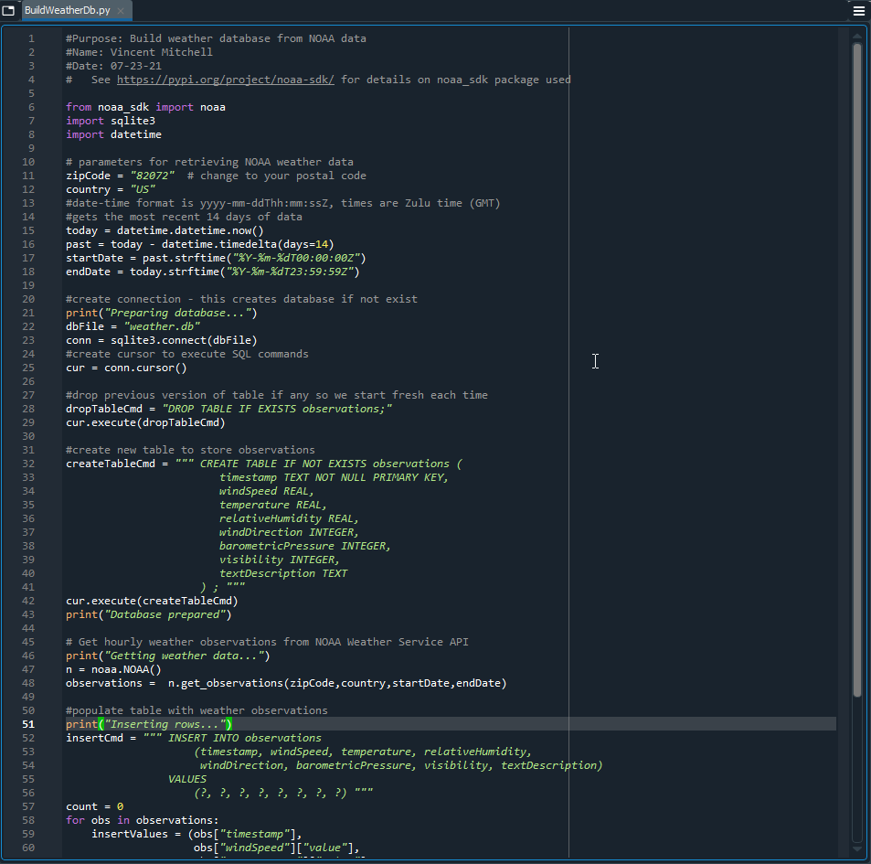
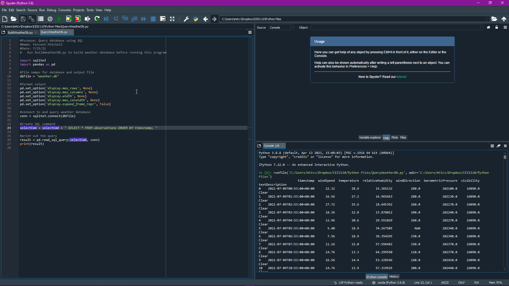
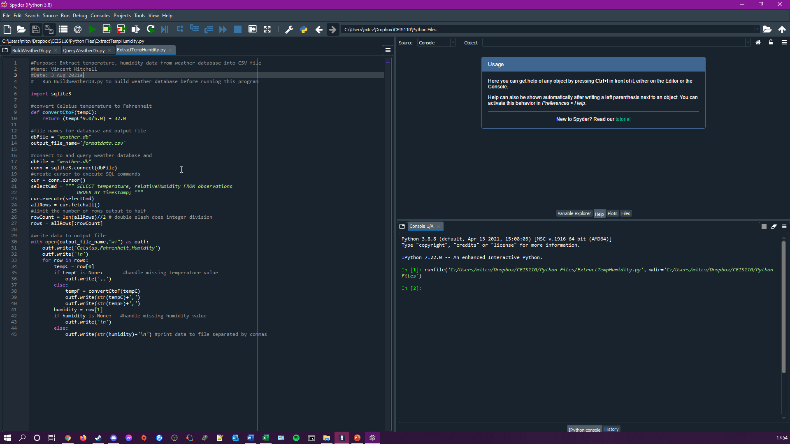
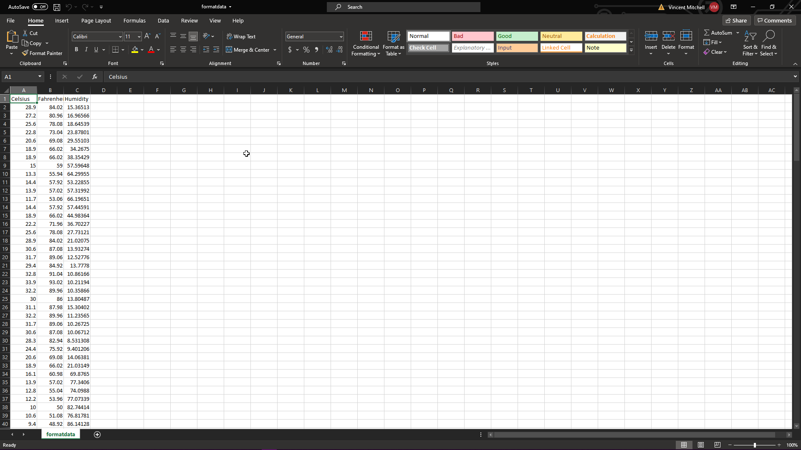
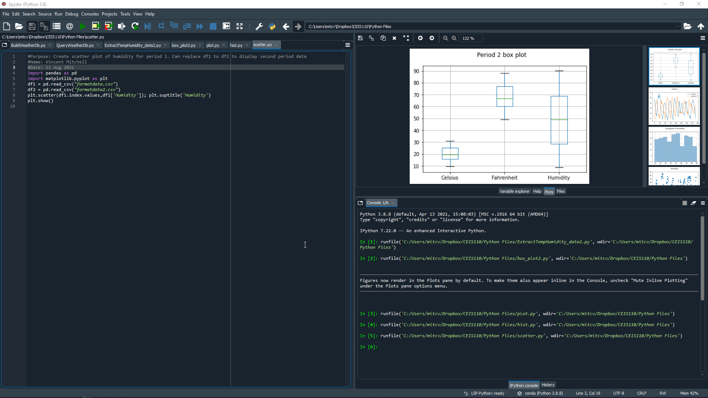
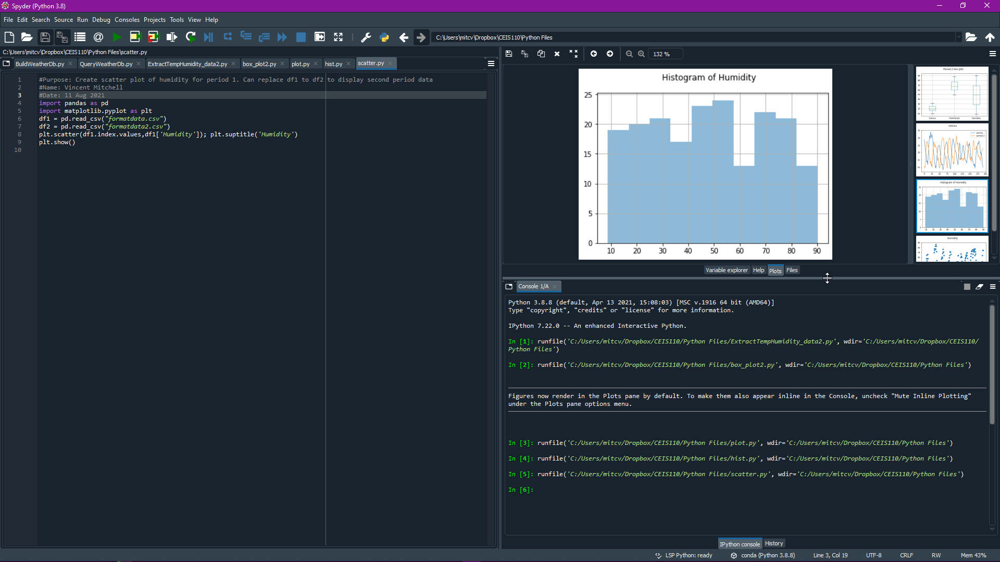
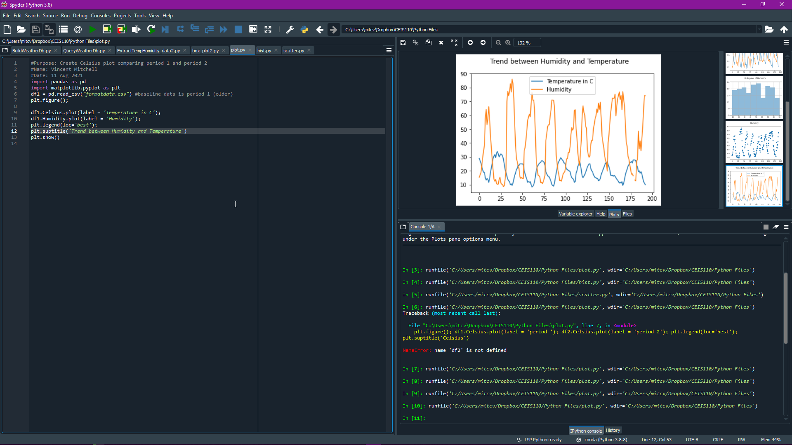

Project 2 | Weather Data Analytics with Python
Student Developer
Overview
This project utilizes the power of Python to download data points from a NOAA weather API based on an input Zip Code. It then utilizes sqlite3 and pandas to display and analyze the data. After the data was downloaded from the NOAA weather API, I used a short python script to convert the information stored in a database file into a CSV format. With the data in a more user-friendly format, I built box-plots, histograms and trend analyses.
Features
- A database file to store incoming weather data from the NOAA weather API.
- A Python code that converts the data from the database into a more usable .csv format.
- A Python code for data visualization and analytics.
Software Development
I used a Python IDE called Spyder for this project. With Spyder, I had the ability to write the Python code as well as integrating pandas for data analysis. For the database, I used sqlite3. This lightweight version of SQL is the perfect choice for storing and managing the minimal amount of data generated by the weather API. If I had been utilizing more data points, I probably would have used a more robust database system.
Project Images






